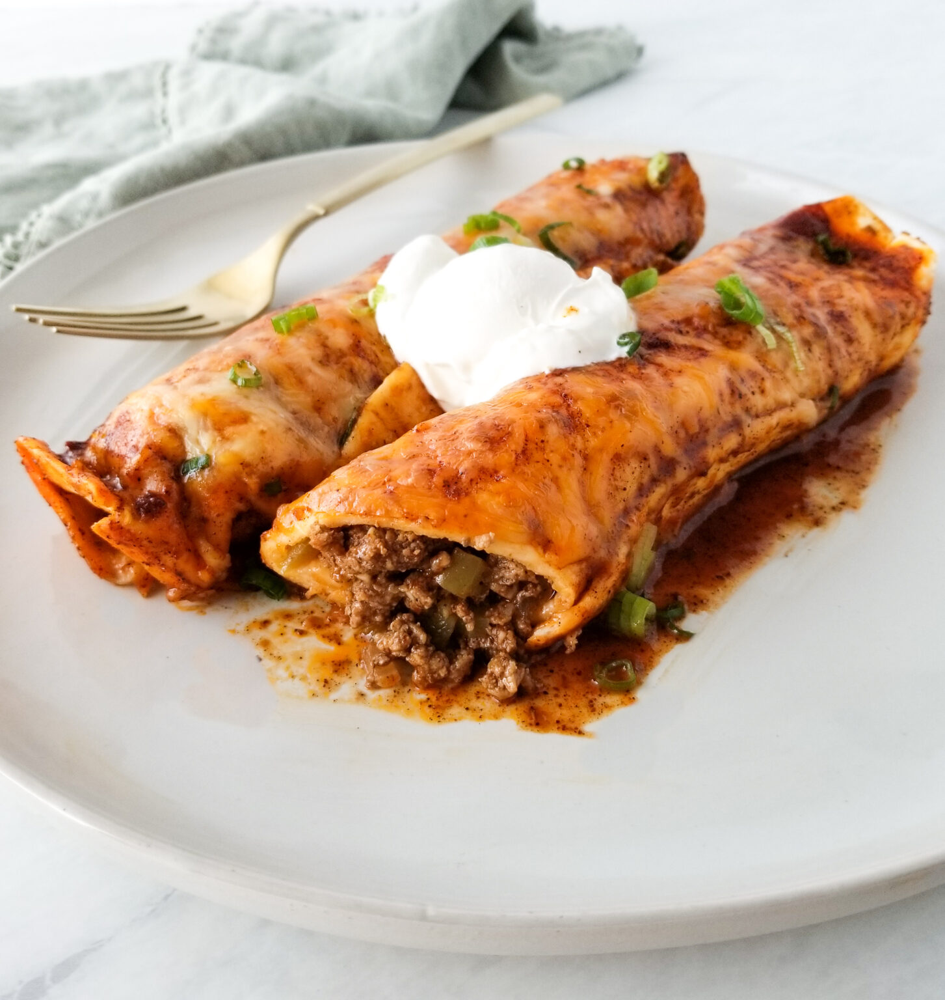

Beef Enchiladas

Description
My homemade beef enchiladas are not only so easy to make but they are budget and kid friendly! These are one of my favorite weeknight meals to make. We like to top ours with sour cream and fresh avocado or guacamole.
This recipe serves about 4 people giving each person two large enchiladas. If you are cooking for a large crowd you can easily double this recipe. If you are cooking for a smaller crowd, these enchiladas make delicious leftovers as well!
Ingredients
- 8 soft taco flour tortillas
- 1 lb ground beef
- 1 cup onion chopped
- 1 cup green bell pepper chopped
- 1/4 teaspoon salt
- 1/4 teaspoon black pepper
- 2 garlic cloves minced
- 1 1/2 cups Mexican cheese
- 1 can of enchilada sauce
Steps
- For the enchilada sauce: In a small saucepan over medium heat, whisk together oil and flour. Stir in tomato paste, cumin, oregano, chili powder, salt, and pepper. Stirring frequently, slowly add water. Bring sauce to a simmer and cook for 10-15 minutes until sauce thickens up, stirring occasionally. Remove from heat to let cool.
- Preheat the oven to 350 degrees.
- While the sauce is cooling, heat a large skillet over medium heat.
- Add ground beef, onions, and green bell peppers to the hot skillet. Season with salt and pepper. Cook, stirring occasionally, until beef is cooked through and peppers and onions are tender. Stir in minced garlic and cook another minute. Add ¼ cup of enchilada sauce to the beef mixture and stir to combine.
- Lay out the flour tortillas and evenly distribute ground beef mixture among them. Sprinkle half the shredded cheese evenly on top of the ground beef mixture. Roll up enchiladas.
- Using a 9"x13" dish, pour ¼ cup enchilada sauce evenly along the bottom of the dish.
- Lay rolled up enchiladas on top of the sauce. Pour remaining sauce on top of enchiladas. Sprinkle top with remaining cheese. Cover enchiladas with foil.
- Bake in the preheated oven and bake for 15 minutes. Remove foil and bake another 10 minutes.
- Remove enchiladas from the oven and let cool slightly before serving. You are ready to serve! Top with sour cream and chopped green onion or cilantro. (optional)